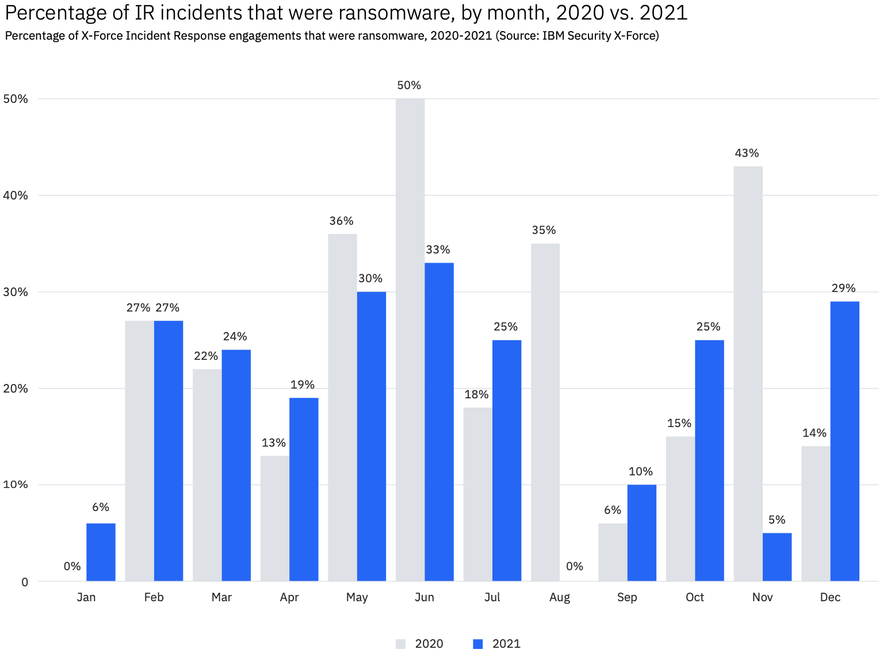
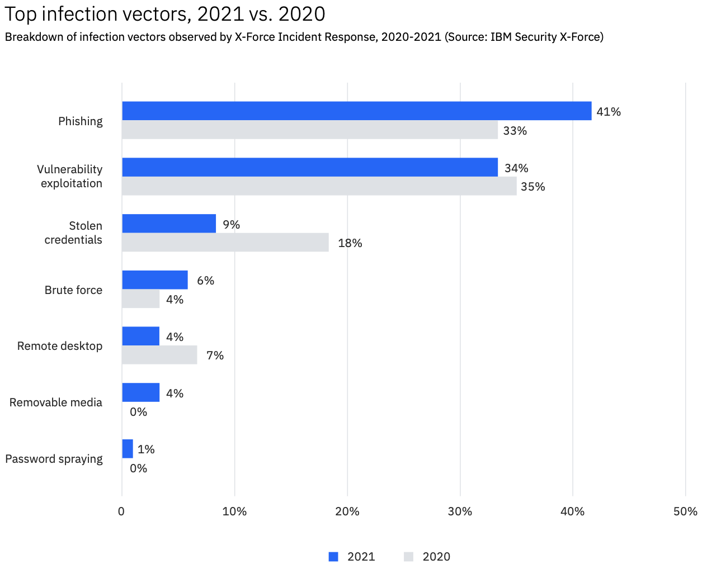
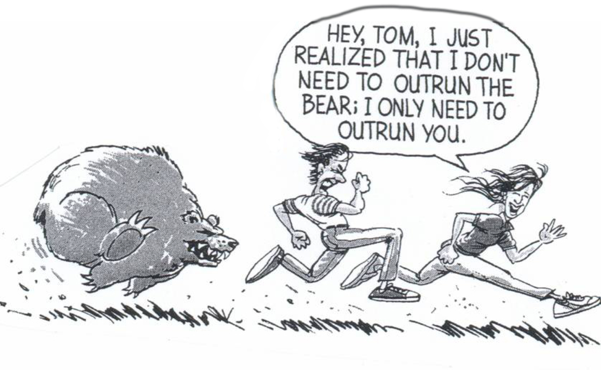
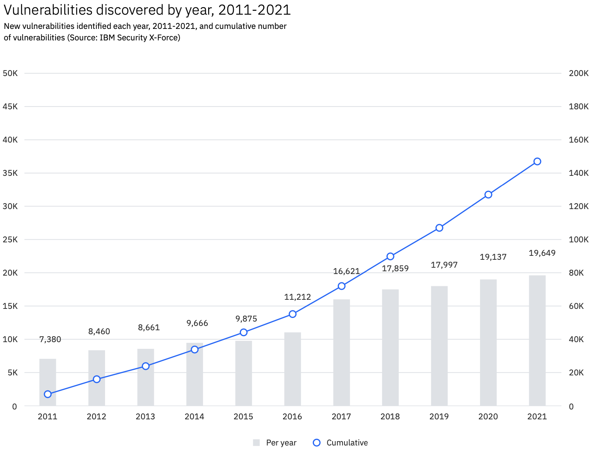
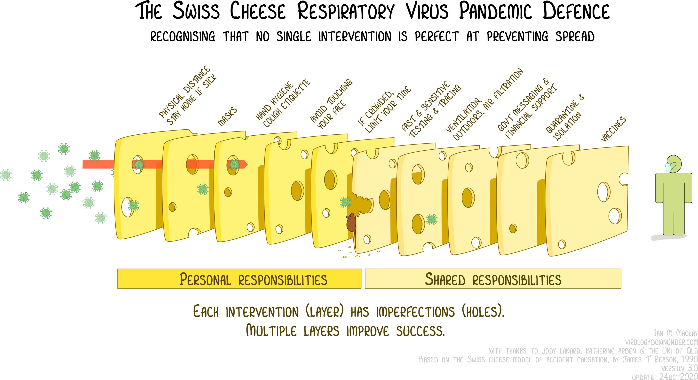

Die Cyber-Bedrohung ist real
Die Anzahl erfasster Cyber-Straftaten steigt weiter an, gemäss Zahlen aus Deutschland (Bundeslagebild 2021 Cybercrime), im Jahr 2021 um über 12 %. Die Statistik für die Schweiz dürfte vergleichbar sein (Halbjahresbericht NCSC).

Ransomware (Erpressungstrojaner) ist aktuell eines der grössten operativen Risiken für viele Organsationen und Firmen. Die Gefahr Opfer eines Cyber-Agriffs zu werden rangiert daher in Risikomangentsystemen verwantwortungsbewusster Organisationen weit oben. Risiken zu erkennen, die möglichen Folgen für die Organisation abzuschätzen und daraus abgeleitet Massnahmen zu ergreifen, um das Schadenspotential zu beschränken, ist die Aufgabe jeder Geschäftsleitung.
Angreifer und Angriffsvektoren
Wer geeignete Schutzmassnahmen plant, muss sich damit auseinandersetzen wer die Angreifer sind und welche Mittel sie einsetzen. Zahlen aus dem IBM X-Force Threat Intelligence Index zeigen, dass die Angreifer zu 97% einen kriminellen Hintergrund haben. Nur 2% der Agriffe kommen von staatlichen Akteuren und geschätze 1% von sogenannten Hacktivisten.

Bezüglich Angriffsvektoren decken Phishing, die Ausnützung von Schwachstellen sowie gestohlene Passwörter über 80% der Mittel und Wege zur Kompromittierung eines Systems ab. Bemerkenswert ist der Rückgang bei gestohlenen Passwörtern. Der Bericht von IBM verweist hier expilzit auf Zwei-Faktor-Authentifizierung (2FA) und folgert, dass diese Massnahme breiter ausgerollt wurde und nun Wirkung zeige.
Können wir für Informationssicherheit garantieren?
Unsere Systeme verarbeiten hochsensitive personenbezogene Daten. Informationssicherheit ist daher Teil der DNA unseres Unternehmens. Wir führen ein Informationssicherheitsmanagementsystem und sind gemäss ISO/IEC 27001:2013 zertifiziert.
Können wir damit also für Informationssicherheit garantieren? Leider nein, in der IT-Sicherheit gibt es keine Garantien. Sicherheit ist kein Zustand, sondern ein Prozess. In unserem Informationssicherheitsmanagementsystem sind messbare Ziele definiert, welche eine kontinuierliche Überwachung und Steuerung erlauben, so dass unsere Prozesse bezüglich Informationssicherheit stetig verbessert werden können. Das können wir garantieren.
In der Praxis: «Outrun the Bear»

Wir haben gesehen, dass 97% der Angreifer einen kriminellen Hintergrund haben. Cyber-Kriminelle handeln opportunistisch und werden daher den Weg des geringsten Widerstandes gehen um ihre Ziele zu erreichen. Daraus folgt, dass die meisten Angriffe eben nicht gezielt gegen eine bestimmte Organisation oder Firma erfolgen, sondern dass diese ein Zufallsopfer werden. Es trifft die Organisation mit der schwächsten Verteidigung beziehungsweise mit den meisten Schwachstellen. Die Eintretenswahrscheinlichkeit des Schadensfall kann mit einem guten Grundschutz, bestehend aus technischen und organisatorischen Massnahmen, erheblich gesenkt werden. In der Praxis bedeutet dies für viele Firmen, dass die Massnahmen nicht perfekt sein müssen, sondern nur relativ besser als die der anderen Organisationen. Das Cartoon «Outrun the Bear» zeigt, dass man nicht schneller als der Bär sein muss um davonzukommen.
Nicht der Mensch ist schuld
Seit Jahren wird argumentiert, dass an mehr als 80% der Sicherheitsvorfällen Menschen schuld sein sollen (IBM Cyber Security Intelligence Index). Richtig ist, dass Cybersecurity nicht in erster Linie als ein technisches Problem betrachtet werden darf. Menschen haben Schwachstellen und machen Fehler. Awareness Trainings, bei denen Benutzer beispielsweise lernen nicht auf suspekte Links zu klicken, können helfen Risiken zu verringern. Die menschliche Natur aber werden solche Schulungen nicht ändern. Der renomierte Security Researcher Bruce Schneier hat dazu einen interessanten Beitrag mit dem Titel «Stop Trying to Fix the User» geschrieben. Wir müssen endlich aufhören den Usern die Schuld zu geben und stattdessen bessere digitale Werkzeuge entwicklen, welche viel weniger anfällig sind für menschliche Schwachstellen.
«The problem isn’t the users: it’s that we’ve designed our computer systems’ security so badly that we demand the user do all of these counterintuitive things.»
– Bruce Schneier
Jede Software hat Schwachstellen
Menschen entwickeln Software; Quellcode wird von Menschen geschrieben. Daraus folgt, dass keine Software ohne Fehler ist und diese – genau wie Menschen selbst – Schwachstellen enthält. Schwachstellen in Software können durch Cyber-Kriminelle ausgenützt werden. Es ist ist nicht absehbar, dass es in naher Zukunft fehlerfreie Software ohne Schwachstellen oder fehlerhafte Konfigurationen geben wird.

Resilienz – Schweizer Käse statt Burgmauern
Wir müssen ergo damit leben, dass sowohl die Benutzer als auch die Software Schwachstellen haben, welche potentiell durch einen böswilligen Akteur ausgenützt werden können. Die IT-Sicherheit setzt seit jeher auf Analogien aus der physischen Welt. Beim Schutz der digitalen Infrastruktur hilft aber die Analogie der dicken Burgmauern nicht weiter. Für die Cyber-Verteidigung brauchen wir ein neues mentales Modell, nämlich Schweizer Käse statt Burgmauern.
Das Swiss Cheese Model hat sich als Modell für die Unfallprävention bereits in verschiedenen Domänen etabliert. Das Ziel ist es einen sogenannten «Single Point of Failure» zu vermeiden. In der Luftfahrt beispielsweise müssen eine ganze Reihe von Massnahmen versagen, damit es zu einem sicherheitsrelevanten Vorfall kommt. Auch die Massnahmen zur Pandemiebekämpfung können wir gemäss dem Swiss Cheese Model interpretieren. Keine der Interventionen ist perfekt und wirkt für sich alleine zu 100%. In der Kombination aber sind die Massnahmen wirksam. Entscheidend ist, dass die Löcher in den Scheiben des Schweizer Käses nicht übereinander liegen.

Angewandte Modelle für mehrstufige Sicherheit – oder Verteidigung in der Tiefe – sind Ansätze wie Zero Trust (vgl. BeyondCorp von Google) oder noch konketer Zwei-Faktor-Authentifizierung (2FA). Hat der Angreifer die erste Hürde (das Passwort) überwunden, so wird er durch den zweiten Faktor (vgl. z.B. YubiKey) aufgehalten. Solche Modelle mit mehrstufigen Schutzmechanismen erhöhen die Resilienz, da bereits in der Konzenption davon ausgegangen wird, dass einzelne Hürden durch den Angreifer überwunden werden können. Auch in diesem Fall ist das System aber nicht unmittelbar kompromitiert.
Im Rahmen einer Veranstaltung für Forschende und Partner aus der Pharmaindustrie organisiert durch unseren Kunden SCQM Foundation durfte ich eine Präsentation mit dem Titel «Cybersecurity: Resilience not Resignation» halten. Dieser Blogbeitrag schöpft aus den Ideen dieser Präsentation.